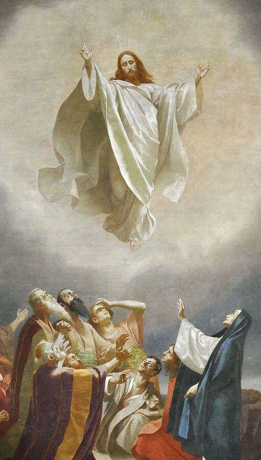

Prayers
The Rosary, The Conduit of Divine Grace
St Dominic
Promises of the Rosary

What is the Rosary?
The Rosary is a set of Prayer beads said to be handed down to St Dominic during a vision in which he encountered the Blessed Virgin Mary.
The Rosary consists of 59 beads, the 6 large beads are used for praying the Our Father, and the 53 smaller beads are used for praying the Hail Mary.
The Rosary is used to allow the individual to meditate and reflect on the life of Jesus Christ, the different hardships and trials faced and the significant events of his life from his Birth to his Death and Resurrection.
The Secrets of the Rosary is the best book in indicating what the Rosary is, the power in which it contains, and its high spiritual ranking.
How to pray the Rosary
The Rosary is one of the most cherished prayers of our Catholic Church.
Started by the Creed, the Our Father, three Hail Marys and the Glory Be, the Rosary involves the recitation of five decades consisting of the Our Father, 10 Hail Marys and the Glory Be.
The Rosary is then Concluded with the Salve Regina (Hail Holy Queen)
During the recitation, the individual meditates on the saving mysteries of Jesus’ life. (Mysteries gone through below).
The Mysteries of the Rosary
Joyful Mystery of the Rosary - Monday & Saturday
- The Annunciation:
- Fruit of the Mystery: Humility
- Think of the humility of the Blessed Virgin when the Angel Gabriel greeted her with these words: "Hail, full of grace."
- The Visitation:
- Fruit of the Mystery: Love of Neighbor
- Think of Mary's charity in visiting her cousin Elizabeth and remaining with her for three months before the birth of John the Baptist.
- The Nativity:
- Fruit of the Mystery: Detachment
- Think of the poverty, so lovingly accepted by Mary when she placed the Infant Jesus, our God and Redeemer, in a manger in the stable of Bethlehem.
- The Presentation:
- Fruit of the Mystery: Obedience
- Think of Mary's obedience to the law of God in presenting the Child Jesus in the Temple.
- The Finding in the Temple:
- Fruit of the Mystery: Perseverance
- Think of The deep sorrow with which Mary sought the Child Jesus for three days and the joy with which she found Him amid the Teachers in the Temple.

Sorrowful Mystery of the Rosary - Tuesday & Friday
- The Agony in the Garden:
- Fruit of the Mystery: God's Will Be Done
- Think of Our Lord Jesus in the Garden of Gethsemani, suffering a bitter agony for our sins.
- The Scourging at the Pillar:
- Fruit of the Mystery: Purity
- Think of The cruel scourging at the pillar that our Lord suffered; the heavy blows that tore His flesh.
- The Crowning with Thorns:
- Fruit of the Mystery: Reign of Christ Our Hearts.
- Think of The crown of sharp thorns that was forced upon our Lord's sacred Head and the patience with which He endured the pain for our sins.
- The Carrying of the Cross:
- Fruit of the Mystery: The Patient Bearing of Trials
- Think of The heavy Cross, so willingly carried by our Lord, and ask Him to help you to carry your crosses without complaint.
- The Crucifixion:
- Fruit of the Mystery: The Pardoning of Injuries
- Think of The love which filled Christ's Sacred Heart during His three hours' agony on the Cross, and ask Him to be with you at the hour of death.

Glorious Mystery of the Rosary - Wednesday & Sunday
- The Resurrection:
- Fruit of the Mystery: Faith
- Think of Christ's glorious triumph when, on the third day after His death, He arose from the tomb and for forty days appeared to His Blessed Mother and his disciples.
- The Ascension:
- Fruit of the Mystery: Hope
- Think of The Ascension of Jesus Christ, forty days after His glorious Resurrection, in the presence of Mary and His disciples.
- The Descent of the Holy Spirit:
- Fruit of the Mystery: The Gifts of the Holy Spirit
- Think of The descent of the Holy Spirit upon Mary and the Apostles, under the form of tongues of fire, in fulfilment of Christ's promise.
- The Assumption:
- Fruit of the Mystery: The Desire of Heaven
- Think of The glorious Assumption of Mary into Heaven, when she was united with her Divine Son.
- The Coronation:
- Fruit of the Mystery: The Grace of Final Perseverance
- Think of The glorious crowning of Mary as Queen of Heaven by her Divine Son, to the great joy of all the Saints.

Luminous Mystery of the Rosary - Thursday
- The Baptism in the Jordan:
- Fruit of the Mystery: Openness to the Holy Spirit
- Think of Christ's Baptism at the hands of John the Baptist when the Father called Him His beloved Son and the Holy Spirit descended on Him to invest Him with the mission He was to carry out.
- The Wedding at Cana:
- Fruit of the Mystery: To Jesus through Mary
- Think of Christ's self-manifestation at the wedding at Cana when He changed water into wine and opened the hearts of the disciples to faith, thanks to the intervention of Mary, the first among believers.
- The Proclamation of the Kingdom:
- Fruit of the Mystery: Christian Witness and Conversion
- Think of Christ's preaching of the Kingdom of God with its call to forgiveness, as He inaugurated the ministry of mercy, which He continues to exercise until the end of the world, particularly through the Sacrament of Reconciliation.
- The Transfiguration:
- Fruit of the Mystery: Courage
- Think of Christ's Transfiguration when the glory of the Godhead shone forth from His face as the Father commanded the Apostles to listen to Him and experience His Passion and Resurrection and be transfigured by the Holy Spirit.
- The Institution of the Eucharist:
- Fruit of the Mystery: Love of Our Eucharistic Lord
- Think of Christ's institution of the Eucharist, in which He offered His Body and Blood as food under the signs of bread and wine and testified to His love for humanity, for whose sake He would offer himself in sacrifice.